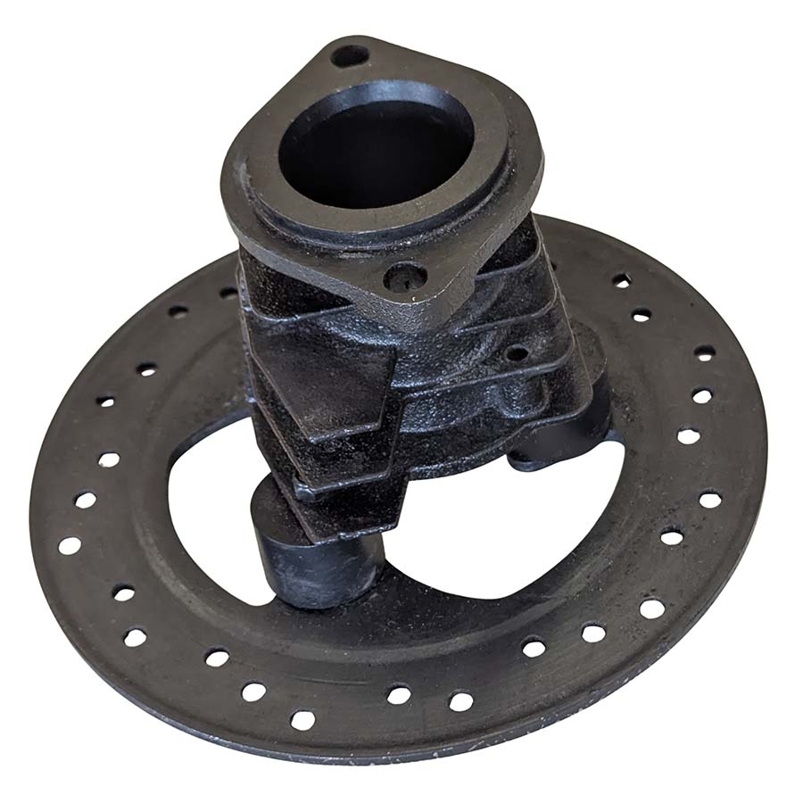
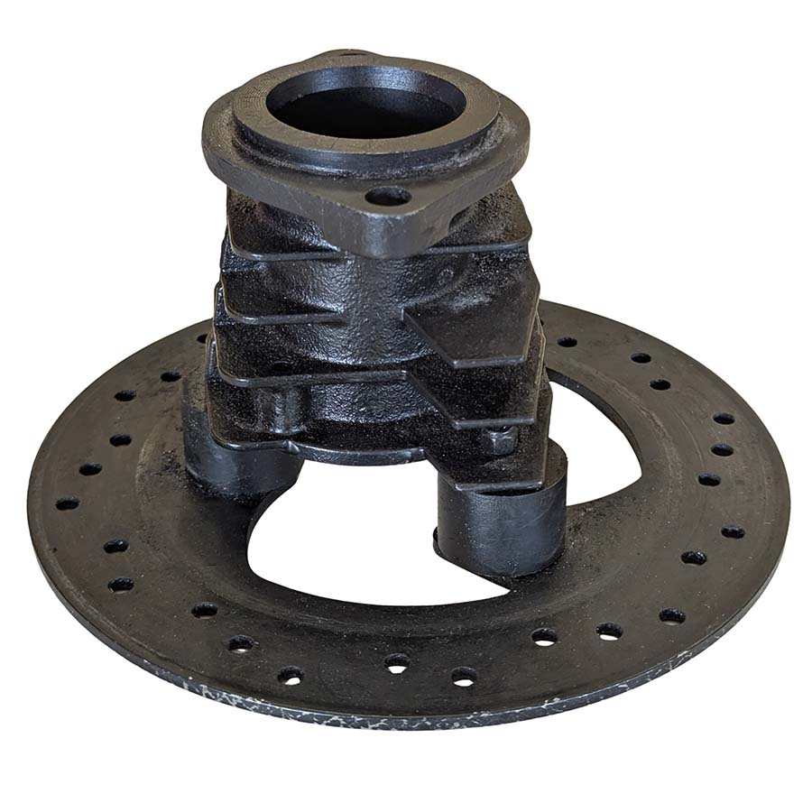
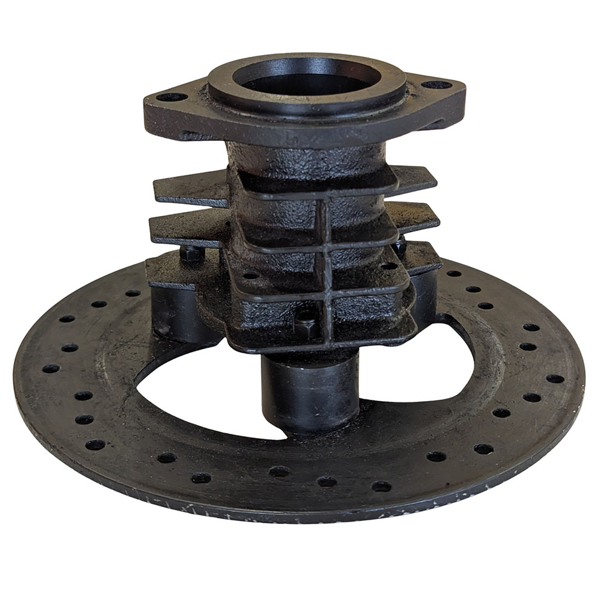
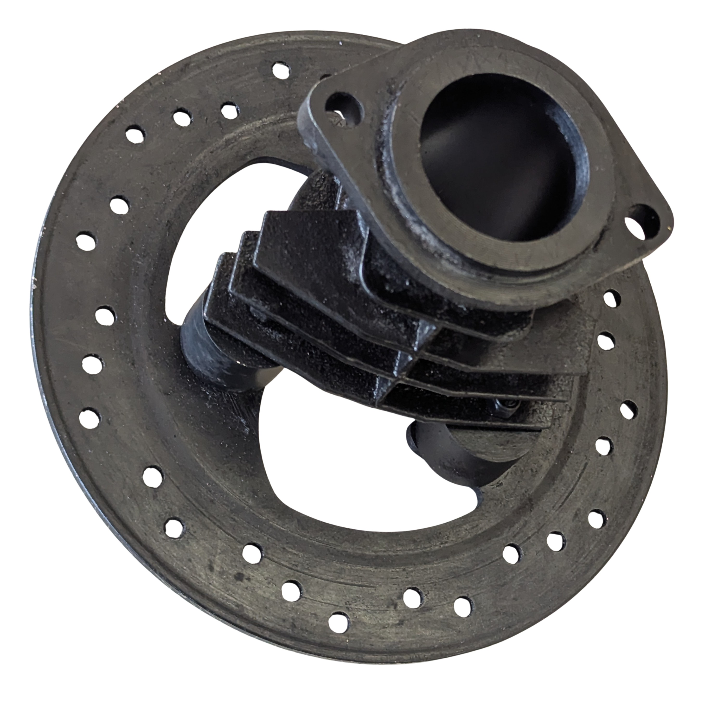

mAjoRnext: SETHLANS 3.0
Mito, Storia e Innovazione
Il progetto Sethlans 3.0, realizzato nei laboratori di meccanica dell'ITIS Majorana di Cassino, trae il suo nome dalla divinità etrusca del fuoco, dell'artigianato e della metallurgia. Sethlans, l'equivalente etrusco del greco Efesto e del romano Vulcano, non era solo il dio che governava le forge, ma era il simbolo stesso della straordinaria maestria tecnica degli Etruschi nella lavorazione dei metalli.
La scelta del nome e dell'estetica di Sethlans 3.0 è una fusione di mito e storia della ceramica. Il Bucchero, ceramica iconica degli Etruschi, era famoso per la sua finitura nera e lucida, ottenuta non tramite pittura, ma attraverso un particolare processo di cottura in riduzione di ossigeno che trasformava l'ossido di ferro nell'argilla. Questo processo mirava a imitare la lucentezza dei metalli preziosi, come l'argento annerito o il bronzo brunito, offrendo un'alternativa più accessibile ma ugualmente raffinata.
Il manufatto Sethlans 3.0, pur essendo un prodotto di ingegneria moderna, adotta deliberatamente la tonalità nera profonda e la finitura opaca, quasi "vellutata", che richiama l'estetica profonda del Bucchero. Attraverso moderne tecniche di trattamento superficiale, abbiamo voluto ricreare quella stessa illusione visiva, unendo il mito della metallurgia etrusca con l'innovazione del XXI secolo, creando un ponte tra il passato e il futuro.
GALLERIA



